01
Общество и городская среда · событие дня
Меньше всего в регионе получали в сфере производства лекарственных средств и материалов, больше всего – те, кто занят в деятельности воздушного и космического транспорта.…
Необходимая инфраструктура уже есть примерно в 6,5 тыс. школ. На первом этапе к проекту смогут подключиться свыше 1,5 тыс.…

Депутат попросил определить ответственных за уход и утвердить правила постоянного обслуживания объекта.
7 октября Губернатор Алексей Русских осмотрел сооружение на территории МБОУ КШ № 7 им. В.В.
Осенью машины будут чистить водоотводные траншеи, а зимой — расчищать дороги в частном секторе.…
Глава города Александр Болдакин заслушал доклад о промежуточных итогах деятельности органов управления и функционирования сил гражданской обороны на территории муниципалитета, а также определил приоритетные задачи на следующий год.…

Второй — краснокирпичный особняк Родионовых и Сачковых на Ленина, 65. Строили с 1870 по 1890 год.…
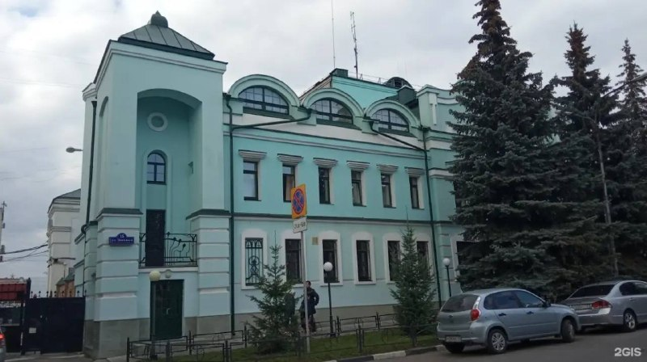
На улице Минаева в Ленинском районе Ульяновска дорожные службы уложили 1 200 квадратных метров нового асфальта для устранения колейности — об этом сообщили в администрации города.…
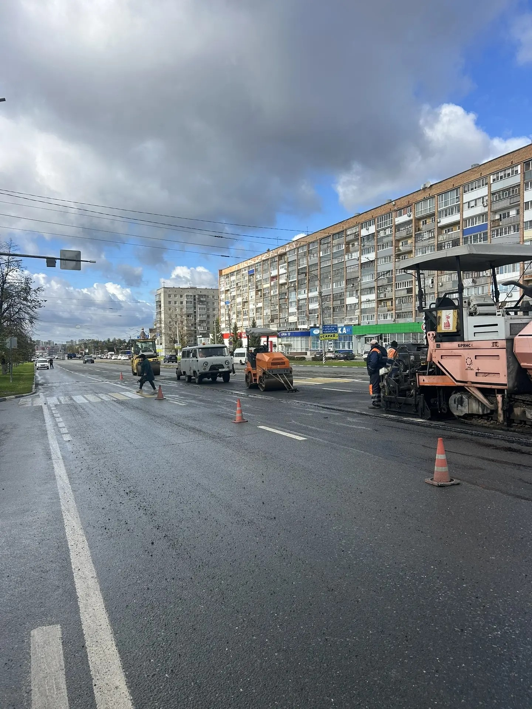
По поручению главы города Александра Болдакина в Ульяновске продолжается постоянный мониторинг качества работы общественного транспорта.…
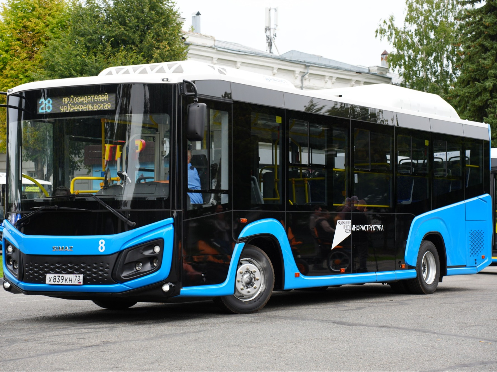
Отработавшим 12 лет депутаты хотят дополнительно помогать с жильем, оплачивая до половины стоимости квартиры из бюджета.…
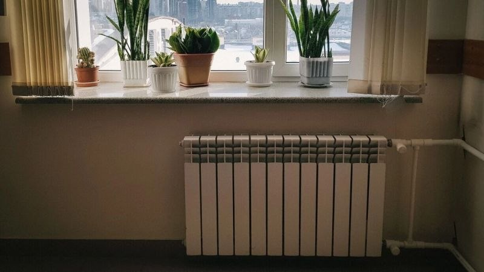

Средняя зарплата доставщиков составляет уже 190 тысяч рублей в месяц. Что происходит?


Сметы разрешено менять по соглашению сторон в пределах роста налога и выделенных бюджетных лимитов города.…
Чем это грозит?- а все расходы и модернизацию теперь оплатит потребитель, то есть - жители.…
Рынок рабочего персонала за последние пару лет переживает серьезные изменения, а швейное производство становится одной из зон кадрового дефицита.…
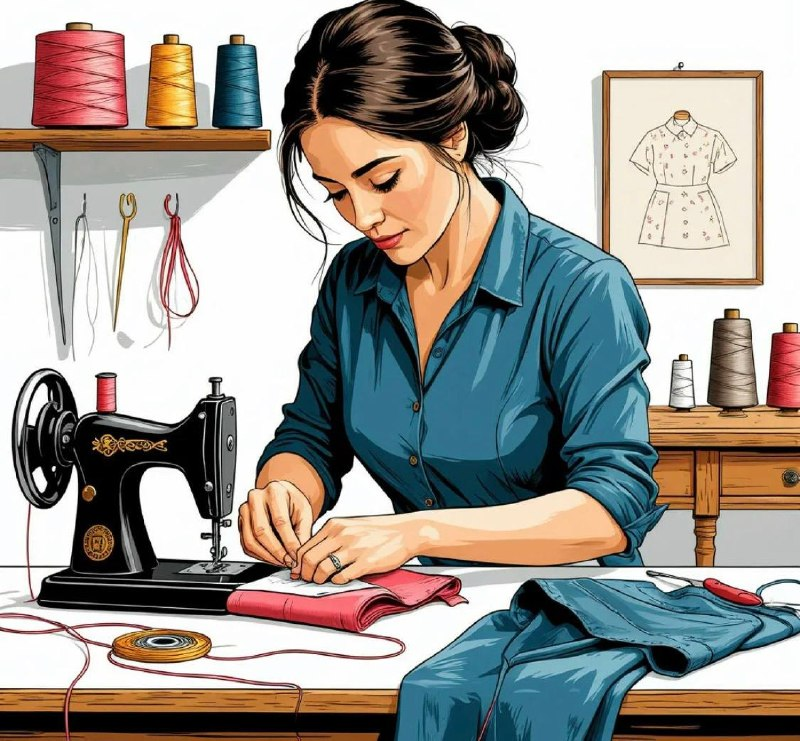
🔹 Гипсокартонщики находятся на третьем месте с средней предлагаемой зарплатой 160,4 тысячи рублей в месяц.
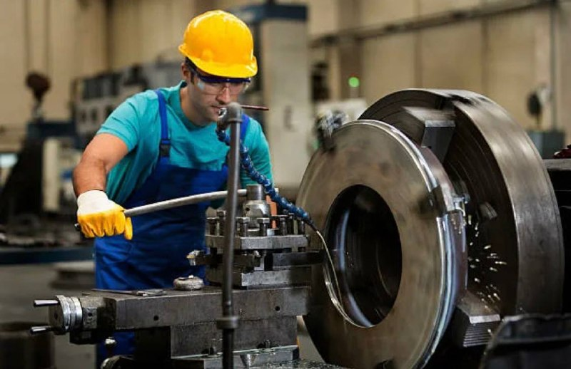
На этот вопрос ответил главный детский специалист травматолог-ортопед регионального Минздрава К таким причинам относятся…
Эндокринологи уже прошли обучение и начали приём.…


Новые диагностические кабинеты будут работать не только для горожан.…

Кабинеты смогут посещать по направлениям и жители трех прилегающих районов области Мы в Telegram | Мы в…

В поликлинику № 4 на улице Камышинской в Ульяновске поступило новое оборудование для диагностики осложнений сахарного диабета — результатами модернизации поделился губернатор Алексей Русских после осмотра лечебного учреждения.…

Врачи прошли обучение и ведут приём. Раньше такую помощь можно было получить в областных многопрофильных больницах.…

Всего по области батареи потеплели на 640 медицинских объектах из 663, в 13 районах региона больницы и поликлиники подключены к теплу на 100%.…
Отопление запущено в 60 из 63 круглосуточных стационаров Ульяновской области — об этом сообщили в региональном Министерстве здравоохранения.…

По специальностям: 🔹 терапевты — 695 🔹 педиатры — 446 🔹 акушеры-гинекологи — 322 🔹 хирурги — 230 🔹 неврологи — 218 🔹 психиатры — 177 🔹 кардиологи — 140 🔹 офтальмологи — 114 Медицинская инфраструктура региона: 🔸 49 больниц 🔸 109 поликлиник 🔸 427 фельдшерско-акушерских пунктов Основа коечного фонда — пациенты терапевтического, хирургического и психиатрического профиля.…
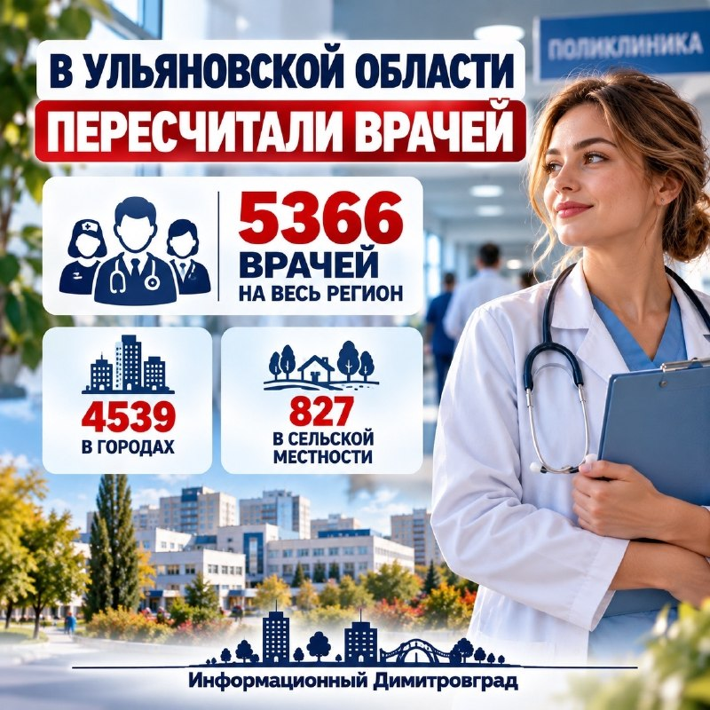


Его деятельность оказала глубокое влияние на религиозную, культурную и политическую жизнь Руси.…

В ближайшие недели объявят ещё одного мастера звука, который разнообразит музыкальную драматургию.…

В списке редакции есть комедии, триллеры, хорроры, кино для семейного просмотра и классика мирового кинематографа.…

Инициаторами стали общественники и имам-хатыб соборной мечети Димитровграда.…
Неравнодушная местная жительница подкармливает его, но забрать к себе не может. Рядом много собак, а ночи становятся всё холоднее.…


В ходе специальной военной операции погиб житель Димитровграда Артём Николаевич Лукьянов.…
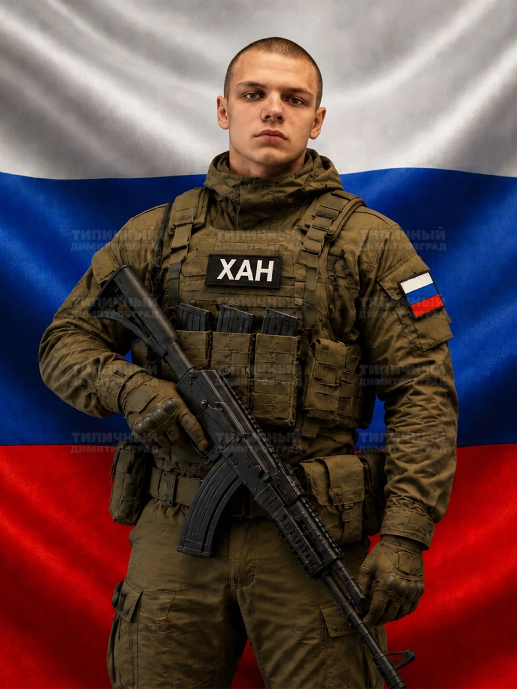
Проверки прошли в рамках рейдов по региону.…
Телефон экстренных оперативных служб 112.…
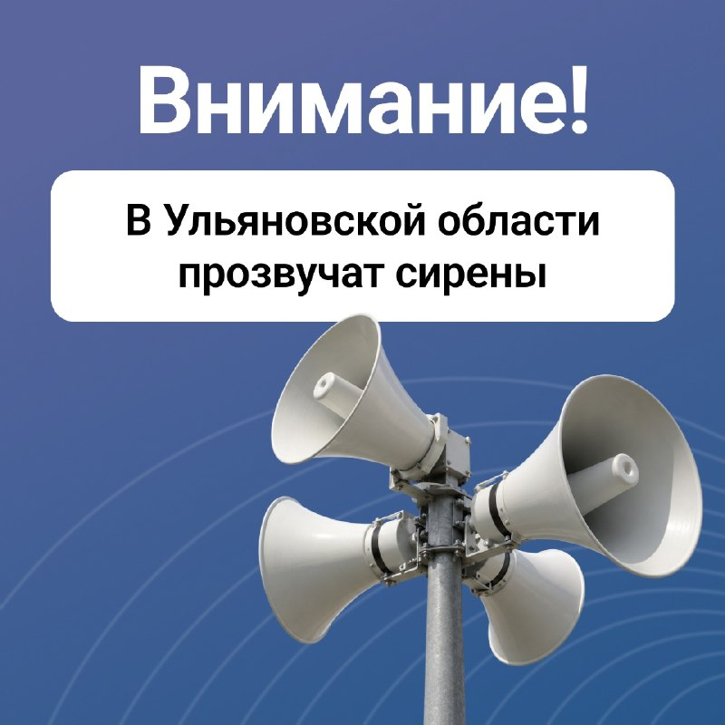
Дело раскрыли сотрудники регионального управления СК совместно с полицией.…
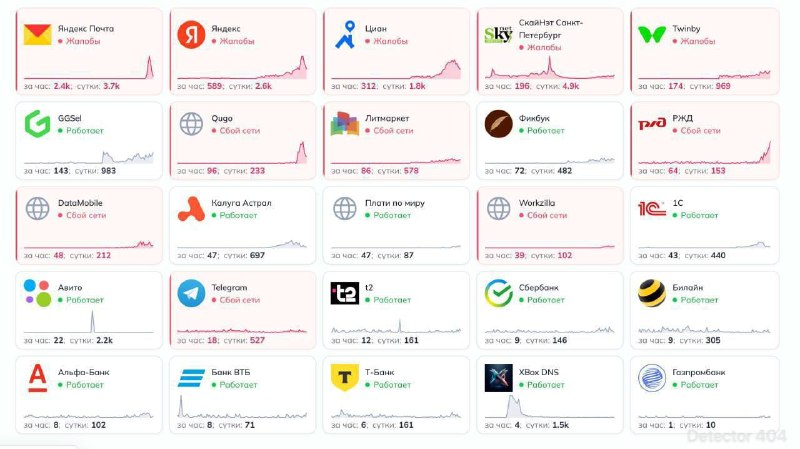
Но в июне 2025 года мужчина самовольно ушёл из квартиры на улице Рабочей, где ему было предписано находиться.…
Женщина скончалась в больнице вскоре после случившегося.…
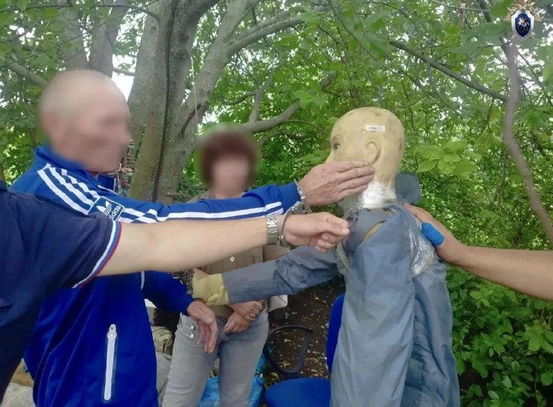
Женщина скончалась в больнице. Расследование завершено, мужчине грозит до 15 лет колонии по ч. 4 ст. 111 УК РФ.…

В Цильнинском районе 60-летний местный житель предстанет перед судом по обвинению в причинении тяжкого вреда здоровью супруги, повлекшем ее смерть — материалы дела с утвержденным обвинительным заключением направили в суд следователи регионального управления СК России.…
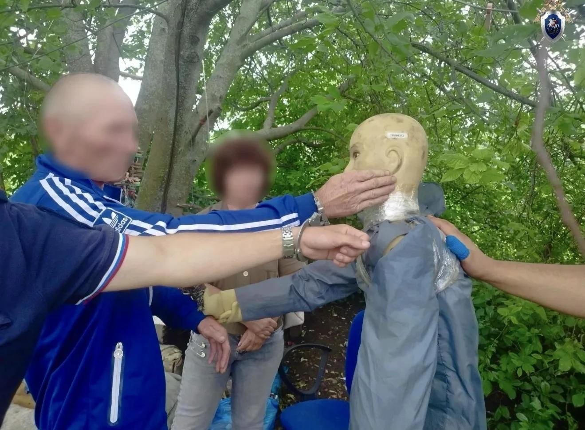
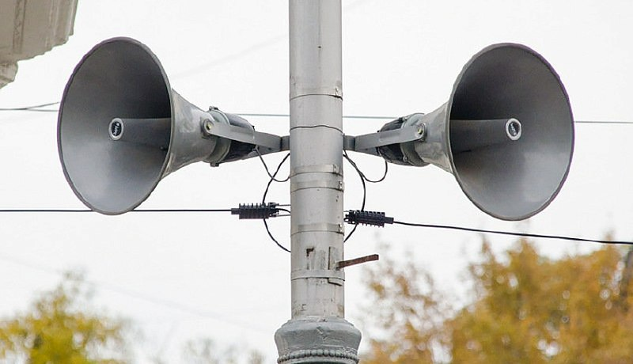

Нарушения правил применения пестицидов и агрохимикатов выявили в 88% контрольных мероприятий на полях Ульяновской области за девять месяцев года — об этом сообщили в межрегиональном управлении Россельхознадзора.…
В список лидеров также вошли геодезисты (198,1 тыс. рублей) и гипсокартонщики (160,4 тыс. рублей).
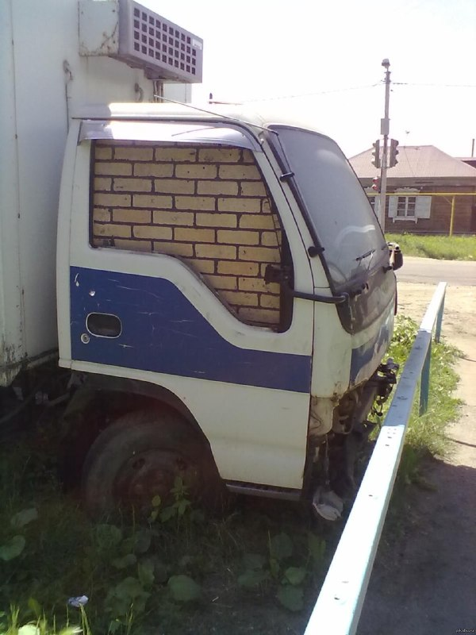
Это похоже на тот самый девятнадцатый век .…
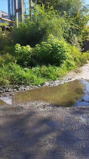
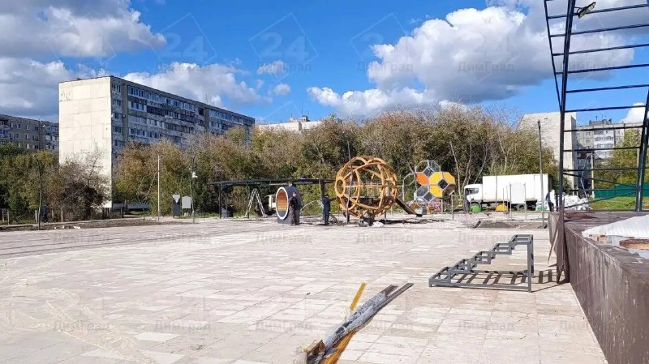
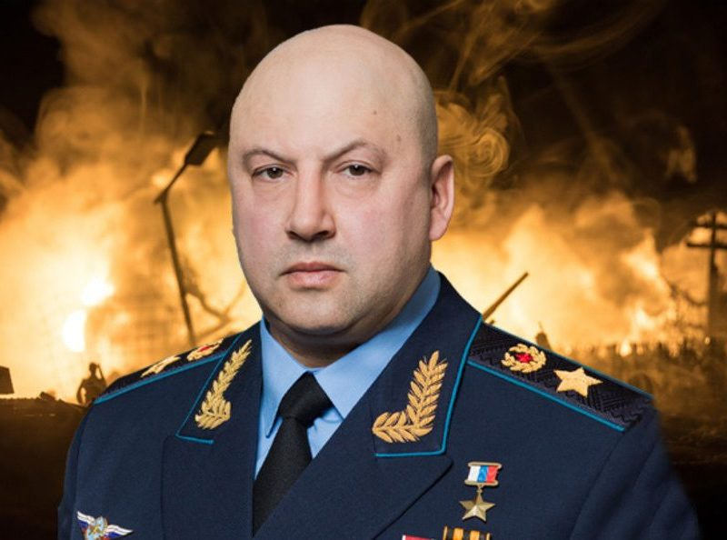
⚡ Обратилась на платформу «Госуслуги. Решаем вместе» с просьбой провести ремонт скамеек в максимально сжатые сроки.…
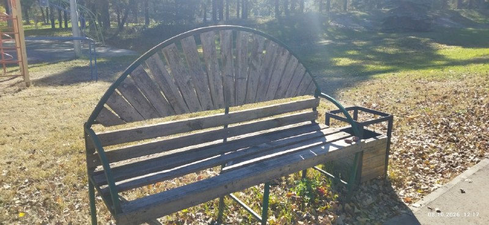
⠀ Сказки будут звучать в парке 10 октября в 14:00 и 11 октября в 14:00. Вход свободный.
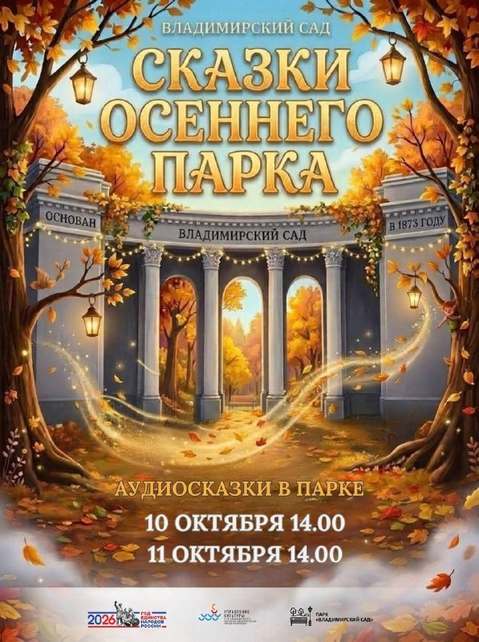
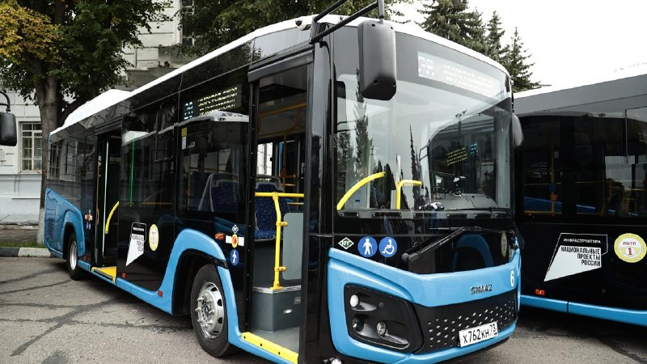

Для нашего телеканала это особый праздник, ведь детство Евгения Луковкина, Владимира Гаврилова и Александра Рябушко связано с тёплыми воспоминаниями о Дворце творчества детей и молодёжи!…
14:10–14:40 — Работа со словом. Ведёт Ксения Матулина. 14:45–15:15 — Хореография.…

У школьников создаётся ощущение, что ради роскошной жизни совсем не обязательно впахивать в офисе.…
Во дворце творчества детей и молодёжи школьников 5-11 классов ждали тематическая пресс-конференция, медиа-урок, а также образовательные практико-ориентированные площадки, подготовленные Ульяновскими вузами и ссузами, областным Министерством финансов и региональным отделением Банка России.…

На переменах ученикам будут транслировать короткие беззвучные ролики длительностью до одной минуты (с возрастной маркировкой 6+), посвященные безопасности, науке, культуре, спорту и истории.…
Необходимая инфраструктура уже есть примерно в 6,5 тыс. школ. На первом этапе к проекту смогут подключиться свыше 1,5 тыс.…
Зачастую профилактические разговоры на классных занятиях не работают.…
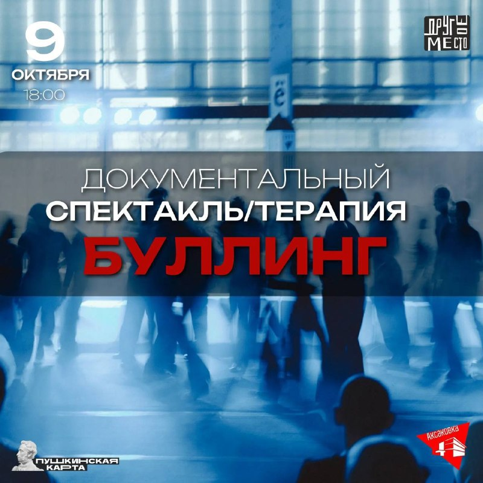

В активе спортсменов также серебро в смешанном экипаже на 200 метрах и бронза у мужчин на 500 метрах. Всего в турнире участвовали 28 экипажей из 19 стран.…
Ульяновские гребцы Данил Положенцев и Павел Скрябин завоевали пять медалей на Кубке мира по гребле на лодках «Дракон», завершившемся в китайском городе Юаньлинь — об успехах представителей регионального Центра спортивной подготовки рассказали в областном Минспорта.…

Здесь школьники смогут играть в футбол и баскетбол, заниматься на тренажёрах и проводить соревнования.…

Долматов оформил двойную победу. Серебро у Вадима Трифонова, Китаев дополнительно взял бронзу в абсолютной весовой категории.…

Девять золотых, одну серебряную и одну бронзовую медали завоевала сборная Ульяновской области на Чемпионате и Первенстве России по силовому спорту в Екатеринбурге — результатами соревнований поделились в региональном Министерстве физической культуры и спорта.…

Возвращаться на ковер оперативного управления Безруков не планирует, но обещает стать мощным лоббистом для ульяновских борцов.

Спортплощадка такого типа в нашей области пока редкая, но не единственная: такие пространства уже работают в Чердаклах и Новоспасском, а до конца года планируется открыть ещё одну в Карлинском.…

| Тема | Завтра | Ожидание | Уверенность |
|---|---|---|---|
| БПЛА и воздушные угрозы | ↓ спад | ~32.7 упоминаний | средняя |
| Городская среда | ↑ рост | ~27.3 упоминаний | средняя |
| Губернатор / власть | ↓ спад | ~36.5 упоминаний | средняя |
| Спорт | ↑ рост | ~26.7 упоминаний | средняя |
| Транспорт и дороги | ↓ спад | ~25.3 упоминаний | средняя |
| Выборы | ↓ спад | ~3.5 упоминаний | средняя |